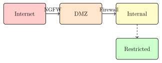

Chapter 8: Network Security Fundamentals¶
Network security protects data in transit and the infrastructure that carries it. Understanding TCP/IP, routing, and network architecture is prerequisite to deploying effective defenses. This chapter builds that foundation before the deeper dives into firewalls, IDS/IPS, and protocol-specific security.
The original designers of TCP/IP optimized for resilience and interoperability, not security. The assumption was a cooperative network of trusted hosts; authentication and integrity were intentionally left to higher layers. Forty years later, the internet runs on the same core protocols, and their original design assumptions are the source of most network-layer attacks. Understanding why a protocol is vulnerable is more useful than memorizing the attack name: it lets you generalize across protocol generations and anticipate where new vulnerabilities will emerge.
8.1 Network Attack Surface¶
The TCP/IP stack presents attack surfaces at every layer:
| Layer | Protocol | Threat | Defense |
|---|---|---|---|
| Physical | Ethernet | Wiretapping, jamming | Fiber, physical security |
| Link | ARP, STP | ARP spoofing, VLAN hopping | DAI, port security |
| Network | IP, ICMP | IP spoofing, routing attacks | BCP38, RPKI |
| Transport | TCP, UDP | SYN flood, session hijack | SYN cookies, TLS |
| Application | HTTP, DNS | Injection, spoofing | Input validation, DNSSEC |
8.1.1 TCP Three-Way Handshake and Attacks¶
SYN Flood DoS
The attacker sends many SYN packets with spoofed source IPs. The server allocates half-open connections, filling the backlog queue, and legitimate connections are rejected.
Defense: SYN cookies (encode state in ISN; no memory allocation until SYN-ACK acknowledged); rate limiting; SYN proxy (firewall).
SYN cookies are elegant precisely because they make the server stateless for the connection establishment phase. The server encodes the full TCP state (initial sequence number, window size, timestamp) into the SYN-ACK sequence number using a cryptographic hash of the four-tuple (src IP, src port, dst IP, dst port) plus a secret. When the ACK arrives, the server recomputes the cookie and verifies it without having stored anything. The cost is that TCP options negotiated in the SYN (like SACK and window scaling) can’t be remembered, which degrades throughput for legitimate connections established during an attack. SYN cookies aren’t free — they trade memory exhaustion for a slight throughput penalty, which is almost always the right trade.
TCP Session Hijacking
If the attacker can predict TCP sequence numbers, they can inject packets into an existing session. Network-level MITM enables eavesdropping.
Defense: TLS (encrypts and authenticates all data); random ISN generation; OS-level RST protection.
Early TCP implementations used predictable ISN generation (often a counter that incremented by a fixed amount every second), which made blind sequence number prediction trivial. Kevin Mitnick exploited this in the 1994 attack against Shimomura: by predicting the server’s sequence numbers, he injected an RSH command without needing to intercept any traffic. Modern operating systems use cryptographically random ISN generation, but the lesson generalizes: any protocol field that an attacker can predict and that the receiver trusts for authentication is a potential injection vector.
8.2 Firewalls¶
Definition 8.1 (Firewall)
A firewall enforces an access control policy between network zones by filtering traffic based on defined rules.
Firewall rules are processed top-to-bottom (or in priority order), and the first matching rule wins. This means rule ordering is a security property, not just a performance property. A rule that allows traffic before a deny rule reaches the deny rule first, negating it. Auditing firewall rule bases is partly an exercise in reading them in order and identifying shadowed rules (rules that can never be reached because an earlier rule matches all their traffic) and over-permissive rules that were added for a specific use case but never narrowed.
8.2.1 Packet Filter (Stateless)¶
Examines each packet independently against a rule table:
# Default deny all incoming
iptables -P INPUT DROP
iptables -P FORWARD DROP
iptables -P OUTPUT ACCEPT
# Allow established/related connections
iptables -A INPUT -m state --state ESTABLISHED,RELATED -j ACCEPT
# Allow SSH from management network only
iptables -A INPUT -s 10.0.0.0/24 -p tcp --dport 22 -j ACCEPT
# Allow HTTP/HTTPS from anywhere
iptables -A INPUT -p tcp -m multiport --dports 80,443 -j ACCEPT
# Allow loopback
iptables -A INPUT -i lo -j ACCEPT
# Log and reject everything else
iptables -A INPUT -j LOG --log-prefix "DROP: "
iptables -A INPUT -j DROP
8.2.2 Stateful Inspection¶
Tracks connection state (NEW, ESTABLISHED, RELATED, INVALID). Only responses to outbound connections are allowed. Unsolicited inbound traffic is blocked even from otherwise-allowed ports.
Stateful firewalls track the connection table in memory, which creates a resource exhaustion attack: an attacker who sends many SYN packets (never completing the three-way handshake) fills the state table, preventing the firewall from tracking new legitimate connections. This is why stateful firewalls should sit behind rate-limiting and anti-spoofing mechanisms, not before them. The RELATED state is also a source of subtle vulnerabilities: FTP active mode uses a control connection on port 21 and a data connection on a dynamically chosen port, and the firewall must parse the FTP control channel to know which data port to allow. Application-layer protocol parsers in stateful firewalls can themselves contain vulnerabilities, as demonstrated by the numerous CVEs in connection tracking modules over the years.
8.2.3 Next-Generation Firewall (NGFW)¶
NGFW adds application-layer inspection:
-
Application ID: Identify application regardless of port (e.g., SSH tunneled over HTTPS)
-
User ID: Tie policies to user identities (AD integration)
-
Content inspection: Decrypt TLS, inspect for malware, IPS
-
URL filtering: Categorize and block web content
-
Threat prevention: Integrated IPS + anti-malware
-
Products: Palo Alto Networks, Fortinet FortiGate, Check Point, Cisco FTD
8.3 VPNs¶
8.3.1 IPsec¶
IPsec operates at Layer 3, providing transparent encryption for all IP traffic:
| Mode | Scope | Use Case |
|---|---|---|
| Transport | Protects payload only; IP header in clear | Host-to-host |
| Tunnel | Encapsulates entire IP packet in new IP | Site-to-site, remote access |
IKEv2 (RFC 7296) — key exchange:
-
IKE_SA_INIT: Propose crypto algorithms; DH exchange; nonce exchange
-
IKE_AUTH: Authenticate peers (certificate or PSK); establish first Child SA
-
CREATE_CHILD_SA: Additional SAs; rekeying
IKEv2 supports a wide range of cipher suites through its SA proposal negotiation, which is both a strength and a liability. The Logjam attack (2015) exploited the ability to downgrade DH key exchange to 512-bit export-grade groups, which a state-level adversary could precompute. IKEv2 deployments that allow weak DH groups (group 1: 768-bit MODP, group 2: 1024-bit MODP) should remove them explicitly. RFC 8247 mandates a minimum of 2048-bit MODP or ECDH with P-256. Dead Peer Detection (DPD) is another practical configuration consideration: without DPD, a crashed remote peer leaves a phantom SA consuming firewall state until the rekeying timer expires, sometimes hours later.
8.3.2 WireGuard¶
Modern VPN protocol using:
-
Crypto: Curve25519 (DH), ChaCha20-Poly1305 (AEAD), BLAKE2s (hash), SipHash (hashtable), HKDF (key derivation)
-
Noise Protocol Framework: Formal handshake
-
Code size: \(\sim 4,000\) lines (vs OpenVPN \(\sim 100,000\); IPsec much more)
WireGuard’s opinionated crypto selection — no cipher negotiation, no algorithm agility — is a deliberate security choice. IPsec’s negotiation phase has been the source of numerous downgrade attacks; WireGuard eliminates the attack surface by removing the negotiation entirely. If a future cryptographic break affects ChaCha20 or Curve25519, WireGuard would need a protocol version bump rather than a configuration change, which is a steeper migration but a much smaller attack surface in the meantime. The protocol’s “silent rejection” of packets from unknown peers (no response, no error message) also prevents fingerprinting: a scanner can’t distinguish a WireGuard endpoint from a closed UDP port.
WireGuard has a notable privacy property: it doesn’t track which peers are “online” in the traditional sense. Peers don’t send keepalive packets unless PersistentKeepalive is configured, so an inactive peer generates no traffic. However, WireGuard does associate each peer with a static public key, which means the server sees a persistent identifier for each device. This is appropriate for site-to-site VPNs but worth considering for user-privacy contexts where device tracking is a concern.
# Server /etc/wireguard/wg0.conf
[Interface]
PrivateKey = <server_private_key>
Address = 10.0.0.1/24
ListenPort = 51820
# Allow traffic through (NAT for internet access)
PostUp = iptables -A FORWARD -i wg0 -j ACCEPT; \
iptables -t nat -A POSTROUTING -o eth0 -j MASQUERADE
PostDown = iptables -D FORWARD -i wg0 -j ACCEPT; \
iptables -t nat -D POSTROUTING -o eth0 -j MASQUERADE
[Peer]
PublicKey = <client_public_key>
AllowedIPs = 10.0.0.2/32 # Which client IPs are allowed from this peer
8.4 Network Segmentation¶
Definition 8.2 (Network Segmentation)
Dividing a network into zones with controlled access between them limits lateral movement after compromise.
Segmentation’s value is containment: when an attacker compromises one system, they face additional authentication and access control barriers before reaching more valuable targets. Without segmentation, a compromised developer workstation can reach production database servers directly, because “all internal traffic is trusted.” With segmentation, the same compromised workstation can only reach the systems that workstation’s role legitimately requires — the developer doesn’t need to connect directly to production databases, so the firewall between the developer VLAN and the production VLAN blocks that traffic.

DMZ: Public-facing services (web, email, DNS); accessible from internet but isolated from internal.
Internal: Corporate users, workstations; no direct internet access.
Restricted: Servers with sensitive data (PCI, PHI, source code); strict access control.
Management: Out-of-band; only jump server access; no user applications.
8.4.1 Zero Trust Network Access (ZTNA)¶
Zero Trust is a response to the failure of the perimeter model. When an organization’s data lives in SaaS applications, employees work from home networks and coffee shops, and adversaries routinely compromise VPN credentials, the concept of a trusted inside and an untrusted outside stops being useful. ZTNA replaces implicit network-location-based trust with explicit identity-and-posture-based access decisions for every request.
Zero Trust Principles
NIST SP 800-207 seven tenets:
-
All data sources and services are resources
-
All communication is secured regardless of network location
-
Access to individual resources is granted per-session
-
Access determined by dynamic policy (identity + device + behavior)
-
Monitor and measure integrity of all owned assets
-
Authentication and authorization strictly enforced before access
-
Collect data to improve security posture
The practical implementation of Zero Trust requires solving three distinct problems. Identity verification (who is this user?) is solved by strong MFA and identity providers like Okta or Azure AD. Device posture assessment (is this device healthy?) requires an MDM or EDR agent that attests to patch level, disk encryption status, and the presence of endpoint security software before granting access. Least-privilege access (what should this identity on this device be able to reach?) requires moving beyond VPN-style “access to the network” to application-level access policies — a contractor’s laptop gets access to the specific project management tool they need, not a route to the entire corporate subnet. Micro-segmentation enforces least-privilege at the network level by creating per-application trust zones rather than per-VLAN trust zones, which is what traditional segmentation provides.
Exercises¶
Exercise 8.1
Design iptables rules for a web server hosting HTTP/HTTPS, with SSH access restricted to a management subnet 192.168.100.0/24, and all other traffic blocked. Include rate limiting for HTTP.
Exercise 8.2
Compare IPsec tunnel mode and WireGuard for a remote access VPN on: key management, performance, crypto agility, and post-quantum readiness. Which do you recommend and why?
Exercise 8.3
A SYN flood attack sends 1 million SYN packets per second. A server without SYN cookies can hold 1024 half-open connections for 30 seconds each. Calculate: (a) how many legitimate new connections are blocked, (b) how SYN cookies eliminate this bottleneck.